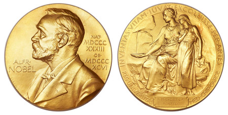

CRISPR
Las CRISPR, acrónimo en inglés de Clustered Regularly Interspaced Short Palindromic Repeats.
Las CRISPR, acrónimo en inglés de Clustered Regularly Interspaced Short Palindromic Repeats.
Emmanuelle Charpentier es una microbióloga y bioquímica francesa. En 2020 fue galardonada con el Premio Nobel de Química "por el desarrollo de un método para edición genética". Este premio lo comparte con Jennifer Doudna.
Estudió bioquímica, microbiología y genética en la Universidad Pierre y Marie Curie (UPMC) en París. En 1995 realizó su doctorado en el Instituto Pasteur. Posteriormente se trasladó a los Estados Unidos, trabajando en diversas universidades y hospitales, como la Universidad Rockefeller, el Centro Médico Langone de la Universidad de Nueva York, el Instituto Skirball de Medicina Biomolecular, también en Nueva York, y el Hospital de Investigación Infantil St. Jude, en Memphis. Tras cinco años, regresó a Europa, primero a Viena y más tarde a la Universidad de Umeå en Suecia, donde obtuvo la plaza de directora de investigación del Molecular Infection Medicine Sweden (MIMS) y es además profesora visitante en el Centro Umeå para Investigación Microbiana (UCMR). En 2013, fue nombrada profesora en el Helmholtz Centre for Infection Research en Braunschweig y una cátedra Alexander von Humboldt en la Escuela de Medicina de Hannover (MHH) en Hannover, Alemania.
En 2015, Charpentier aceptó la oferta de la Sociedad Max Planck de dirigir el nuevo Instituto Max Planck de Biología de la Infección en Berlín, manteniendo su plaza de profesor visitante en la Universidad de Umeå. Charpentier es más conocida por su papel en descifrar los mecanismos moleculares del sistema inmunológico bacteriano CRISPR-Cas9 (en inglés: clustered regularly interspaced short palindromic repeats) y su aplicación como herramienta en ingeniería genética. En colaboración con el laboratorio de Jennifer Doudna, el laboratorio de Charpentier descubrió como Cas9 podría ser usado para hacer cortes en cualquier secuencia deseada de un genoma e insertar, suprimir o modificar ADN.34 El método que desarrollaron implicaba la combinación de Cas9 con moléculas sintéticas de «ARN guía» de fácil creación. Investigadores de todo el mundo utilizan este método para manipular de forma eficaz ADN de plantas, animales y líneas celulares de laboratorio.
Desde los primeros meses de 2015 tanto Charpentier como Doudna mantienen un litigio de patentes con el bioquímico Feng Zhang, aunque realmente se trata de una polémica entre las instituciones donde trabajan los litigantes: el Instituto Tecnológico de Massachusetts (MIT), donde trabaja F. Zhang y la Universidad de California en Berkeley, lugar de trabajo de Doudna. Ambas instituciones piensan que hay mucho prestigio y dinero en juego.
En 2020 fue galardonada con el Premio Nobel de Química "por el desarrollo de un método para edición genética". Este premio lo comparte con Jennifer Doudna.
2011 – Premio Fernström para científicos jóvenes y prometedores6 2014 – Premio Göran Gustafsson7 2014 – Premio Dr. Paul Janssen de Investigación Biomédica8 (compartido con Jennifer Doudna) 2014 – Premio Jacob Heskel Gabbay9 (compartido con Feng Zhang y Jennifer Doudna) 2014 – Premio Breakthrough de Ciencias de la Vida10 (compartido con Jennifer Doudna) 2015 – Premio de la Sociedad Internacional de Tecnologías Transgénicas11 (compartido con Jennifer Doudna) 2015 – Premio Louis-Jeantet de Medicina12 2015 – Time 100: Pioneros13 (compartido con Jennifer Doudna)14 2015 – Premio Ernst Jung de Medicina15 2015 – Premio Princesa de Asturias de Investigación Científica y Técnica (compartido con Jennifer Doudna) 2015 – Premio Gruber de Genética (compartido con Jennifer Doudna)16 2015 – Premio Umeå University Jubilee: The MIMS Excellence by Choice Programme17 2015 – Medalla Carus, de la Academia de Ciencias Leopoldina18 2016 – Premio Fundación BBVA Fronteras del Conocimiento en la categoría de Biomedicina junto a Jennifer Doudna y Francisco M. Mojica 2020 – Premio Wolf en Medicina junto con Jennifer Doudna.19 2020 - Premio Nobel de Química en conjunto con Jennifer Doudna